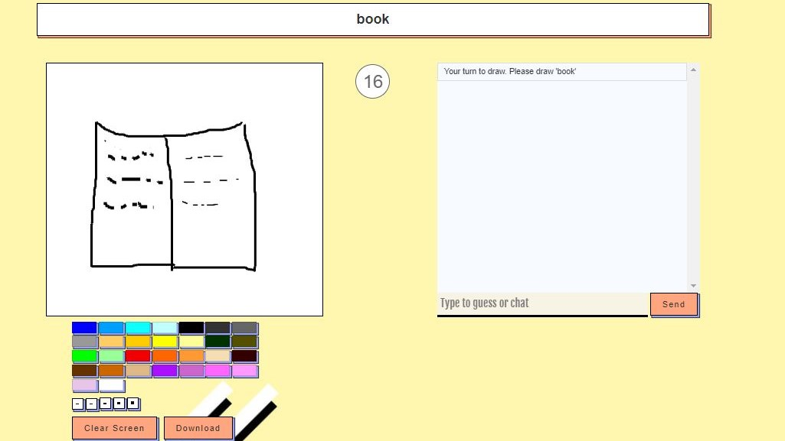
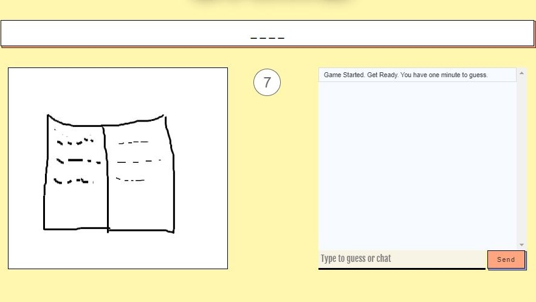

The goal is on the one hand to guess the drawn word correctly as fast as possible and on the other hand to draw the shown word as accurate as possible.
One player (the drawing player) sees a random word in the middle of the screen, which has to be drawn in the canvas below. Different colors and line widths can be choosen to draw. Also the whole canvas (Clear Screen button) can be cleared.

Image 1: View of the drawer
All other players have to guess and type their assumtions in the chat. As a hint, the number of letters that make up the word are shown as underscores in the middle of the screen.

Image 2: View of the guesser
There is a time limit of 60 seconds per round. If a player is able to guess the word before the time runs out, he is the winner of this round and the next player is on the drawing turn.
When nobody guesses right before the time runs out, nobody wins and the next player is on the drawing turn.
There is the possibility for the drawing player to download the drawing as a .jpg file and store it locally.
For communicating between server and clients Javascript websockets were used. When the game is initialized a new websocket on the localhost is constructed.
The webapp is divided between the model, view and controller elements.
Stores the information of the game and the useres.
Everything that the uses sees on the screen.
Gets all the imputs and converts it to commands for the model and view
Html5's geolocation api is used at the login screen to get the users location. Therefore the browser needs to have the right to get your current location. Afterwards the 3 digit country code is filled in and stored as your loaction for the game.
The drawing player needs to draw the word, which is seen in the middle, in the canvas below. It can be choosen between many different colors and 5 line widths. There is only a limited time of 60 seconds for one drawing/guessing round. After all players guessed right or the time runs out, the next player has to draw another random word.
The drawn image is downloadable at any time. It is implemented via a html butten which when pressed gets the content of the canvas, lets you choose the name of the file and downloads the drawing as a .png file.
The app uses the Java Script Audio API. There are 3 different sounds (join, leave and win) in our game. When one of this events occur, the JS audio constructor creates a new HTMLAudioElement and the user can hear the appropriate soundeffect.
For the webserver in the backend NodeJS and Express were used.
Executing of the Websockets and the Webserver.
Express.js is a backend web application framework for NodeJS. It was used for building the web app.